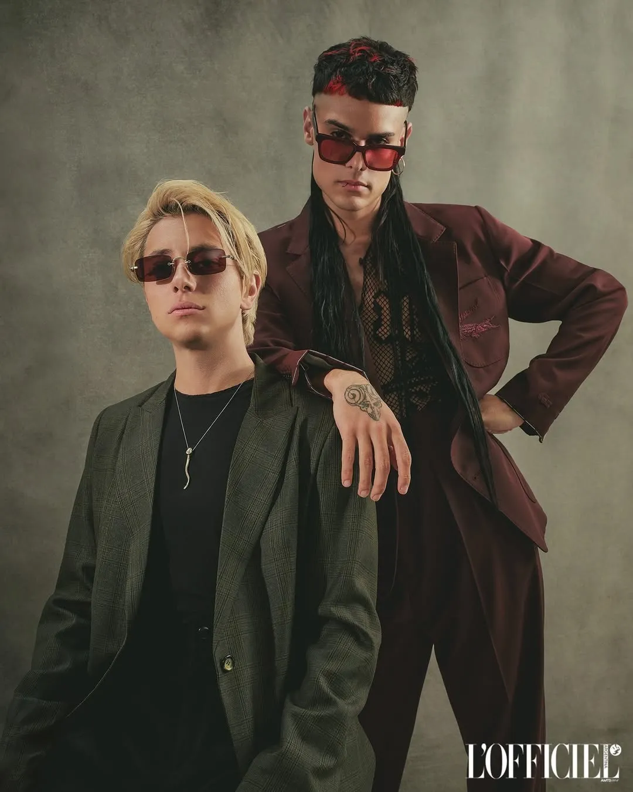

Ca7riel y Paco Amoroso: breve historia
Una maestra los confundió por hermanos el primer día de clase. Treinta años después, el mundo entero los sigue confundiendo con los personajes que ellos mismos inventaron.
La historia que ellos cuentan una y otra vez desde hace un par de años en cada entrevista es de cuando se conocieron el primer día de primaria, su maestra los confunde por tener apellidos parecidos y les pregunta si son hermanos. Ellos dicen que sí y luego sus mamás se hicieron amigas, y pasaron toda la primaria a diario juntos por la mañana en la escuela por la tarde en la casa de Catriel, con su papá que tocaba la viola, mientras cocinaba fideos. Ulises aprendía a tocar el violín y Catriel el bajo. Dos amigos con formación musical distinta, uno un virtuoso, otro un estratega ambicioso. La inteligencia de ambos es musical y escénica. Comparten además, la ambición y el hambre de fama. Empezaron desde abajo, y hackearon la escena desde adentro dos músicos que saben de música, con el sentido del humor ácido e irónico a flor de piel, una energía magnética en el escenario y esa necesidad de no instalarse en ninguna categoría y reinventarse cada vez.
Todo arranca en el under, con una banda de rock llamada Astor y las Flores de Marte, tocando entre amigos. Ulises tocaba la batería: "al principio era malardo", dijo una vez Cato; Ulises admite que era "cumplidor". Parece que la vida de Ulises va de accidente en accidente, y así fue cuando tenía la mano enyesada y no podía tocar la batería que un buen día decidió comenzar a cantar, tenía 24 años. Por ese tiempo Catriel cantaba y Ulises conocía todas sus canciones, ambos viviendo en La Boca, viajando en subte, tren, colectivo y con muy poco dinero en el bolsillo. Decidieron entonces que si lo mejor que sabían hacer era música, entonces vendieron música. Tenían la destreza, tenían el conocimiento, tienen el desparpajo, con su formación de conservatorio se infiltraron en la escena del trap, vestidos con estética glitch y caótica. Ni ellos mismos se imaginaron lo que vendría después.
Tocaron con Astor 7 años, grabaron un solo disco. Mientras Catriel daba clases de música, era sesionista, tocaban en el andén de la estación Retiro. Ulises tenía trabajos precarios, repartidor del correo, o el cadete que tira humo en las fiestas con esas maquinitas negras.
Al agotar la etapa y comenzar a tocar juntos, llegó un momento en que nació el alter ego de Ulises: Paco Amoroso. Para ese tiempo Catriel ya tenía su alter ego Ca7riel, su nombre de rapero. Hoy el mundo los conoce como CA7RIEL y Paco Amoroso; ya no distinguimos a la persona del personaje, puede que a ellos a veces también les cueste.
El 2018 fue cuando nació el mito, juntos escribieron Piola, A mí no y Jala Jala, Ca7riel sacó Povre y Livre. Juntos fueron dinamita, su química hizo que en un año agoten 5 Nicetos; en 2019 se consagraron en un emblemático escenario de Buenos Aires: el Estadio Obras. Talento real, envuelto en una provocación que nadie sabía si tomarse en serio.
No inventaron un género nuevo: hackearon todos los existentes.
La pandemia corta la racha justo cuando más impulso tenían, y ahí aparece la primera gran decisión editorial de esta historia: en vez de forzar el dúo, se separan un rato. Cada uno se va a hacer su purga personal —Catriel graba El Disko, Paco graba Saeta— y cuando vuelven a juntarse para Temporada II, la vuelta no es nostalgia, es una decisión estratégica: la bestia que armaron juntos, como dicen ellos mismos, camina sola y tiene hambre propia.
Con Baño María la ironía deja de ser un chiste de dos amigos y se convierte en modelo de negocio. Firman con una discográfica grande, graban en Miami con productores de primer nivel, y el bait más recordado de esa etapa (bañarse literalmente en un jacuzzi arriba de un escenario de festival, frente a miles de personas, sin tocar un instrumento) funciona exactamente como estaba planeado: genera indignación, viralidad, y termina devolviéndoles más atención de la que hubiera dado un show convencional. La ironía, a esta altura, ya es la estrategia.
Lo que nadie tenía calculado fue el Tiny Desk. La sesión acústica en una sola toma para NPR hace algo que se esperaba, darles reconocimiento global pero en proporciones astronómicas, logrando encandilar hasta al público más exigente. Ese único video dispara todo lo demás, los entradas a los conciertos se comienzan a agotar, los comienzan a llamar, nace Papota. Luego vendran: Coachella, Jimmy Fallon, Fuji Rock, que resulta una gira en estrella alrededor del mundo, 7 premios Gardel y cinco Latin Grammy. El éxito y el lujo empieza a sentirse pesado y estructurado. Llevaron sus cuerpos al extremo mientras cosechaban fans en cada concierto.
Y como en toda buena historia de ascenso, el vértigo pasa factura. A fines de esa misma racha llegan las señales del burn out, luego del desenfreno de Las Vegas, cancelan su disco TOP OF the HILLS. Fue el precio de sostener durante tanto tiempo el personaje que los hizo famosos.

Free Spirits, el capítulo más reciente, es la respuesta a ese agotamiento y también su narrativa más elaborada. El concepto: un falso centro de bienestar espiritual, todo lino blanco y paletas neutras, con colaboraciones de peso (Sting, Jack Black, Anderson .Paak) jugando el papel de gurúes de una sanación propia de una aceptación de los miedos del costo de esta fama. Debajo de la estética zen, las letras siguen hablando de sus miedos: a envejecer, a que se apague la música, a quedar solos cuando se corra el telón. También de lo asfixiante de estar siempre en el ojo y la boca de todos, y de la ambición desmedida de seguir deseando siempre más, como cantan en la ex Gimme More.
Si hay una conclusión posible después de siete Eras, es esta: CA7RIEL & Paco Amoroso no sobrevivieron a la industria evitando sus reglas, sino jugando con ellas hasta el límite —construyendo, una y otra vez, su propia crisis para poder demolerla en público y volver a nacer del otro lado. No es que hayan encontrado la fórmula del éxito. Es que decidieron reinventarse en voz alta, con la ironía y el pecho puesto por delante, rodeados de amigos, como la única forma de que el éxito no los consumiera.